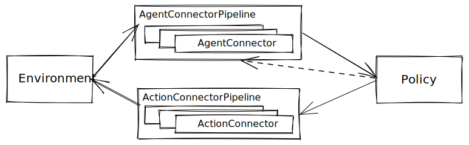

Connectors (Alpha)
Contents


Connectors (Alpha)#
Connector are components that handle transformations on inputs and outputs of a given RL policy, with the goal of improving the durability and maintainability of RLlib’s Policy checkpoints.
RLlib algorithms usually require one or more user environments and policies (usually a neural network).
Data observed from the environments usually go through multiple steps of preprocessing before they reach the policy, while the output of the policy also gets transformed multiple times before they are used to control specific agents in the environments.
By consolidating these transformations under the framework of connectors, users of RLlib will be able to:
Restore and deploy individual RLlib policies without having to restore training-related logics of RLlib Algorithms.
Ensure policies are more durable than the algorithms they get trained with.
Allow policies to be adapted to work with different versions of an environment.
Run inference with RLlib policies without worrying about the exact trajectory view requirements or state inputs.
Connectors can be enabled by setting the enable_connectors parameter to True with AlgorithmConfig.rollouts() API.
Key Concepts#
We have two classes of connectors. The first is an AgentConnector, which is used to transform observed data from environments to the policy.
The second is an ActionConnector, which is used to transform the outputs from the policy to actions.
AgentConnector#
AgentConnectors handle the job of transforming environment observation data into a format that is understood by
the policy (e.g., flattening complex nested observations into a flat tensor). The high-level APIs are:
class AgentConnector(Connector):
def __call__(
self, acd_list: List[AgentConnectorDataType]
) -> List[AgentConnectorDataType]:
...
def transform(
self, ac_data: AgentConnectorDataType
) -> AgentConnectorDataType:
...
def reset(self, env_id: str):
...
def on_policy_output(self, output: ActionConnectorDataType):
...
AgentConnector operates on a list of observation data. The list is constructed by grouping together observations from agents that are mapped to a same policy.
This setup is useful for certain multi-agent use cases where individual observations may need to be modified based on data from other agents. This can also be useful if users who need to construct meta-observations, e.g., build a graph as input to the policy from individual agent observations.
For convenience, if an AgentConnector does not operate on the full list of agent data, it can be
implemented by simply overriding the transform() API.
AgentConnectors also provide a way for recording the output of the policy at the current time step
(prior to transformation via ActionConnectors) to be later used for inference in the next time step.
This is done through the on_policy_output() API call and is useful when your policy is a
recurrent network, attention network, or auto-regressive model.
ActionConnector#
ActionConnector has a simpler API, which operates on individual actions:
class ActionConnector(Connector):
def __call__(
self, ac_data: ActionConnectorDataType
) -> ActionConnectorDataType:
...
def transform(
self, ac_data: ActionConnectorDataType
) -> ActionConnectorDataType:
...
In this case, __call__ and transform are equivalent. Users may choose to override either
API to implement an ActionConnector.
Common Data Types#
AgentConnectorDataType#
Per-agent observation data that goes through an AgentConnector is in the format of AgentConnectorDataType.
@ExperimentalAPI
class AgentConnectorDataType:
"""Data type that is fed into and yielded from agent connectors.
Args:
env_id: ID of the environment.
agent_id: ID to help identify the agent from which the data is received.
data: A payload (``data``). With RLlib's default sampler, the payload
is a dictionary of arbitrary data columns (obs, rewards, terminateds,
truncateds, etc).
"""
def __init__(self, env_id: str, agent_id: str, data: Any):
self.env_id = env_id
self.agent_id = agent_id
self.data = data
AgentConnectorsOutput#
The output from RLlib’s default agent connector pipeline is in AgentConnectorsOutput format.
@ExperimentalAPI
class AgentConnectorsOutput:
"""Final output data type of agent connectors.
Args are populated depending on the AgentConnector settings.
The branching happens in ViewRequirementAgentConnector.
Args:
raw_dict: The raw input dictionary that sampler can use to
build episodes and training batches.
This raw dict also gets passed into ActionConnectors in case
it contains data useful for action adaptation (e.g. action masks).
sample_batch: The SampleBatch that can be immediately used for
querying the policy for next action.
"""
def __init__(
self, raw_dict: Dict[str, TensorStructType], sample_batch: "SampleBatch"
):
self.raw_dict = raw_dict
self.sample_batch = sample_batch
Note that in addition to the processed sample batch, which can be used for running the policy
forward pass, AgentConnectorsOutput also provides the original raw input dict, because it
sometimes contains data required for downstream processing (e.g. action masks).
ActionConnectorDataType#
ActionConnectorDataType is the data type ActionConnector deals with.
It is basically env and agent IDs, input_dict, and PolicyOutputType.
The raw input dict is made available for action connectors in case some of the
data fields are needed for adapting action outputs, for example action masks.
@ExperimentalAPI
class ActionConnectorDataType:
"""Data type that is fed into and yielded from agent connectors.
Args:
env_id: ID of the environment.
agent_id: ID to help identify the agent from which the data is received.
input_dict: Input data that was passed into the policy.
Sometimes output must be adapted based on the input, for example
action masking. So the entire input data structure is provided here.
output: An object of PolicyOutputType. It is is composed of the
action output, the internal state output, and additional data fetches.
"""
def __init__(
self,
env_id: str,
agent_id: str,
input_dict: TensorStructType,
output: PolicyOutputType,
):
self.env_id = env_id
self.agent_id = agent_id
self.input_dict = input_dict
self.output = output
Before, users of RLlib policies would have to come up with the right observation and state inputs before they can call a policy. With agent connectors, this task is taken care of automatically.
PolicyOutputType = Tuple[TensorStructType, StateBatches, Dict]
Advanced Connectors#
Lambda Connector helps turn simple transformation functions into agent or action connectors without having users worry about the high-level list or non-list APIs. Lambda Connector has separate agent and action versions, for example:
# An example agent connector that filters INFOS column out of
# observation data.
def filter(d: ActionConnectorDataType):
del d.data[SampleBatch.INFOS]
return d
FilterInfosColumnAgentConnector = register_lambda_agent_connector(
"FilterInfosColumnAgentConnector", filter
)
# An example action connector that scales actions output by the
# policy by a factor of 2.
ScaleActionConnector = register_lambda_action_connector(
"ScaleActionConnector",
lambda actions, states, fetches: 2 * actions, states, fetches
)
Multiple connectors can be composed into a ConnectorPipeline, which handles
proper running of all children connectors in sequence and provides basic operations to modify and update the composition of connectors.
ConnectorPipeline also has agent and action versions:
# Example construction of an AgentConnectorPipeline.
pipeline = ActionConnectorPipeline(
ctx,
[ClipRewardAgentConnector(), ViewRequirementAgentConnector()]
)
# For demonstration purpose, we will add an ObsPreprocessorConnector
# in front of the ViewRequirementAgentConnector.
pipeline.insert_before("ViewRequirementAgentConnector", ObsPreprocessorConnector())
# Example construction of an ActionConnectorPipeline.
pipeline = ActionConnectorPipeline(
ctx,
[ConvertToNumpyConnector(), ClipActionsConnector(), ImmutableActionsConnector()]
)
# For demonstration purpose, we will drop the last ImmutableActionsConnector here.
pipeline.remove("ImmutableActionsConnector")
Policy Checkpoint#
If connectors are enabled, RLlib will try to save policy checkpoints in properly serialized formats instead of relying on python pickling. Eventually, the goal is to save policy checkpoints in serialized JSON files to ensure maximum compatibility between RLlib and python versions.
When enabled, the configurations of agent and action connectors will get serialized and saved with checkpointed policy states. These connectors, together with the specific transformations they represent, can be easily recovered (by RLlib-provided utils) to simplify deployment and inference use cases.
You can read more on Policy checkpoints here.
Serving and Inference#
With connectors essentially checkpointing all the transformations used during training, policies can be easily restored without the original algorithm for local inference, as demonstrated by the following Cartpole example:
# Restore policy.
policy = Policy.from_checkpoint(
checkpoint=checkpoint_path,
policy_ids=[policy_id],
)
# Run CartPole.
env = gym.make("CartPole-v1")
obs, info = env.reset()
terminated = truncated = False
step = 0
while not terminated and not truncated:
step += 1
# Use local_policy_inference() to run inference, so we do not have to
# provide policy states or extra fetch dictionaries.
# "env_1" and "agent_1" are dummy env and agent IDs to run connectors with.
policy_outputs = local_policy_inference(
policy, "env_1", "agent_1", obs, explore=False
)
assert len(policy_outputs) == 1
action, _, _ = policy_outputs[0]
print(f"step {step}", obs, action)
# Step environment forward one more step.
obs, _, terminated, truncated, _ = env.step(action)
RLlib will also provide utils soon to make server/client deployment of trained policies much easier. See Notable TODOs.
Adapting a Policy for Different Environments#
It is not uncommon for user environments to go through active development iterations. Policies trained with an older version of an environment may be rendered useless for updated environments. While env wrapper helps with this problem in many cases, connectors allow policies trained with different environments to work together at the same time.
Here is an example demonstrating adaptation of a policy trained for the standard Cartpole environment for a new mock Cartpole environment that returns additional features and requires extra action inputs.
class MyCartPole(gym.Env):
"""A mock CartPole environment.
Gives 2 additional observation states and takes 2 discrete actions.
"""
def __init__(self):
self._env = gym.make("CartPole-v1")
self.observation_space = gym.spaces.Box(low=-10, high=10, shape=(6,))
self.action_space = gym.spaces.MultiDiscrete(nvec=[2, 2])
def step(self, actions):
# Take the first action.
action = actions[0]
obs, reward, done, truncated, info = self._env.step(action)
# Fake additional data points to the obs.
obs = np.hstack((obs, [8.0, 6.0]))
return obs, reward, done, truncated, info
def reset(self, *, seed=None, options=None):
obs, info = self._env.reset()
return np.hstack((obs, [8.0, 6.0])), info
# Custom agent connector to drop the last 2 feature values.
def v2_to_v1_obs(data: Dict[str, TensorStructType]) -> Dict[str, TensorStructType]:
data[SampleBatch.NEXT_OBS] = data[SampleBatch.NEXT_OBS][:-2]
return data
# Agent connector that adapts observations from the new CartPole env
# into old format.
V2ToV1ObsAgentConnector = register_lambda_agent_connector(
"V2ToV1ObsAgentConnector", v2_to_v1_obs
)
# Custom action connector to add a placeholder action as the addtional action input.
def v1_to_v2_action(
actions: TensorStructType, states: StateBatches, fetches: Dict
) -> PolicyOutputType:
return np.hstack((actions, [0])), states, fetches
# Action connector that adapts action outputs from the old policy
# into new actions for the mock environment.
V1ToV2ActionConnector = register_lambda_action_connector(
"V1ToV2ActionConnector", v1_to_v2_action
)
def run(checkpoint_path, policy_id):
# Restore policy.
policy = Policy.from_checkpoint(
checkpoint=checkpoint_path,
policy_ids=[policy_id],
)
# Adapt policy trained for standard CartPole to the new env.
ctx: ConnectorContext = ConnectorContext.from_policy(policy)
# When this policy was trained, it relied on FlattenDataAgentConnector
# to add a batch dimension to single observations.
# This is not necessary anymore, so we first remove the previously used
# FlattenDataAgentConnector.
policy.agent_connectors.remove("FlattenDataAgentConnector")
# We then add the two adapter connectors.
policy.agent_connectors.prepend(V2ToV1ObsAgentConnector(ctx))
policy.action_connectors.append(V1ToV2ActionConnector(ctx))
# Run CartPole.
env = MyCartPole()
obs, info = env.reset()
done = False
step = 0
while not done:
step += 1
# Use local_policy_inference() to easily run poicy with observations.
policy_outputs = local_policy_inference(policy, "env_1", "agent_1", obs)
assert len(policy_outputs) == 1
actions, _, _ = policy_outputs[0]
print(f"step {step}", obs, actions)
obs, _, done, _, _ = env.step(actions)
End-to-end Example#
TODO: End-to-end case study: adapting an old policy to bootstrap the training of new LSTM policies, then serve the newly trained policy in a server/client setup.
Notable TODOs#
Bring connectors to offline algorithms.
Migrate rollout worker filters to connector.
Migrate episode building and traning sample collection into connector.
Examples and utilities demostrating deployment of RLlib policies in a client-server remote environment.